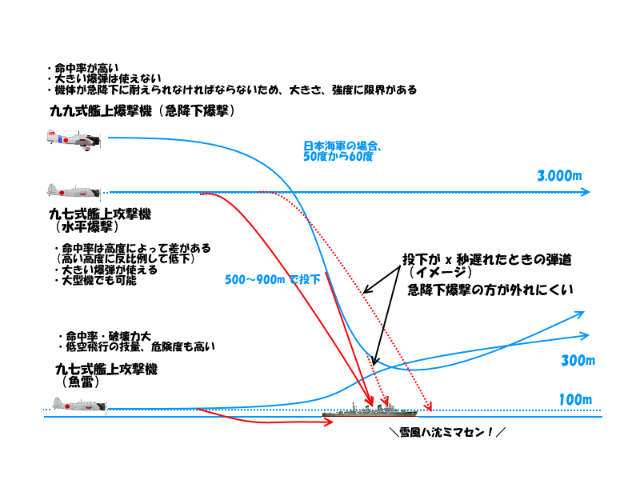
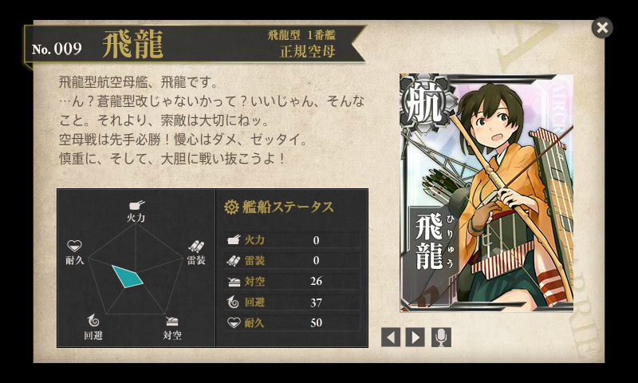
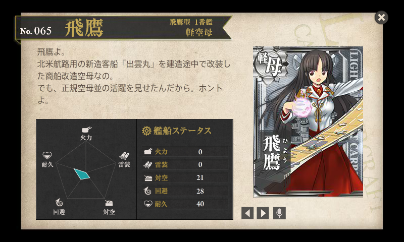
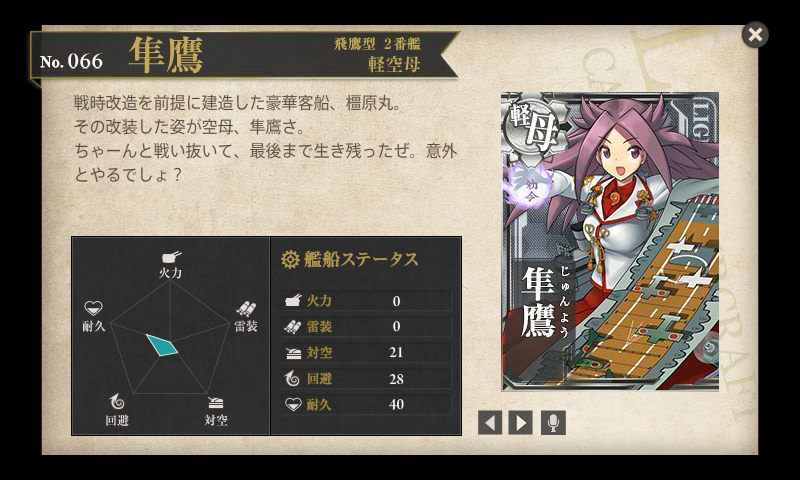

『空母雷撃隊―艦攻搭乗員の太平洋海空戦記』
公開日：
")
- 作者: 金沢秀利
- 出版社/メーカー: 光人社
- 発売日: 2009/06/25
- メディア: 文庫
- クリック: 2回
- この商品を含むブログ (3件) を見る
“艦これ”やってて最初わかんなかったのは、艦攻と艦爆の違いだったなー。頑張って図にしてみるとこんな感じかな。

ポイントは、当時の艦載機のスペックだと
- 魚雷や重量のある強力な爆弾を積む
- 命中率の高い急降下爆撃を行う（急降下に耐えうる機体強度）
という2つのミッションを同時にこなせる機体は作れなかったということ。なので、前者を艦上攻撃機、後者を艦上爆撃機に分けてやらせたわけだね。
- 艦上攻撃機
- 強力な魚雷・重爆弾が搭載できる大型機。
- 三座式（操縦士、雷撃手、電信員）。偵察や航法（現在位置の測定、進行方向の決定）も
- 艦上爆撃機に比べ低速。
- 艦上爆撃機
- 急降下爆撃により精度の高い攻撃が可能。
- 高い機体強度。大きさに限界。
- 二座（複座）式（急降下の操縦に専念する操縦士、照準・偵察・航法などを担当する爆撃手）
やっぱり花形は操縦士だけど、補助する人も仕事が多くて大変。戦果はむしろ雷撃手や爆撃手にかかっているし、通信や航法だって大事。単座の艦上戦闘機だと航法担当がいないから、下手すりゃ空母に帰ってこれなくなる。
艦上爆撃機は魚雷も爆弾も積めるけれど、戦艦クラスになると上からの攻撃への防御（水平防御）は割りと強く（※ただし、おばあさんたちや不幸型戦艦を除くデース）、しかも水平爆撃はあてるのが難しいので、魚雷の方が効果的という見方が支配的だったみたい。ただし、魚雷は積み替えるのに時間がかかる（参照：ミッドウェー海戦 - Wikipedia）。
現在では、
近接信管の出現などによる対空砲撃能力の向上は、急降下爆撃を極めて困難にした。そのため戦後のジェット機時代になるとともに、急降下爆撃機は消滅した（同時に雷撃機も消滅している）
とのことで、艦上攻撃機しか存在せず、その艦上攻撃機もマルチロール化（多目的化）によって艦上戦闘機に吸収されつつあるみたい。

著者は最初、正規空母「飛龍」（ミッドウェー海戦で最後まで戦った空母やな）の雷撃隊に所属し、電信員（通信士兼後部機銃員）をやっていたのだそうな。いわゆる「友永隊」やな。

「飛龍」が沈んだ後は、出雲丸さんにちょっと乗って、

最後はヒャッハーさんに乗ってたらしい。本書は南太平洋開戦で終わっている。
空中格闘ができない艦攻は、攻撃されたら落とされないことを祈るだけ。しかも電信員ともなれば操縦だって他人任せで、ロクに旋回角度もない機銃で応戦するのが関の山ともなれば、なかなかもどかしい、しんどい役回りだったろうなと思う。